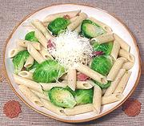

|
Pasta & Vegetable with BaconCalifornia | ||||
| Serves: Effort: Sched: DoAhead: |
2 lunch ** 30 min Prep |
This recipe is absurdly simple, but with these flavors, who needs complexity? It's one of my favorite ways to use Brussels Sprouts - but other vegetables work very well too. | |||
|
|
10 6 8 tt tt ------ ar |
oz oz oz t t ---- |
Vegetable (1) Bacon, smoked (2) Pasta (2) Salt Pepper --- Garnish Romano Cheese or Parsley Favorites Brussels Sprouts Green Beans Cauliflower Peas, frozen Lima Beans, frozen Asparagus |
Recipe is sized as lunch for two, or Italian pasta courses for four - but is very easy to double or cut in half. Prep - (10 min)
|